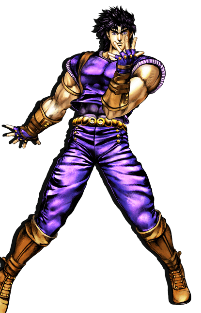
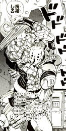
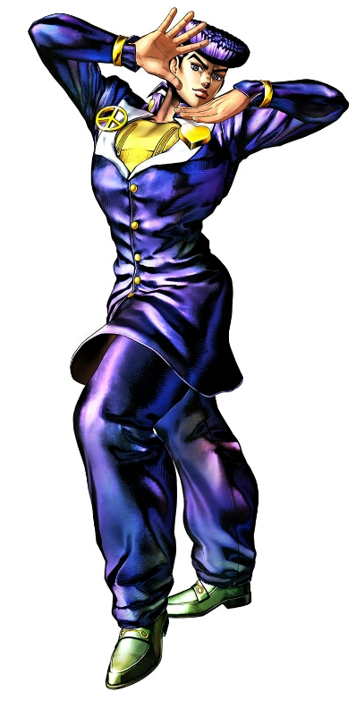
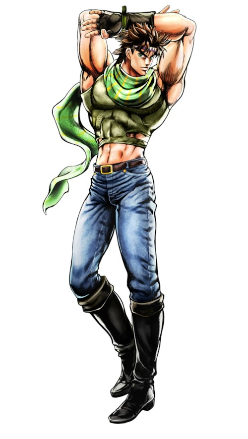
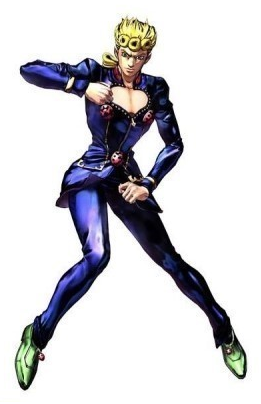
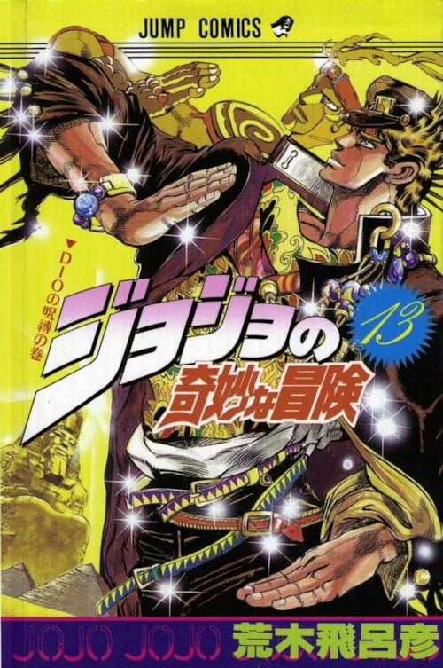
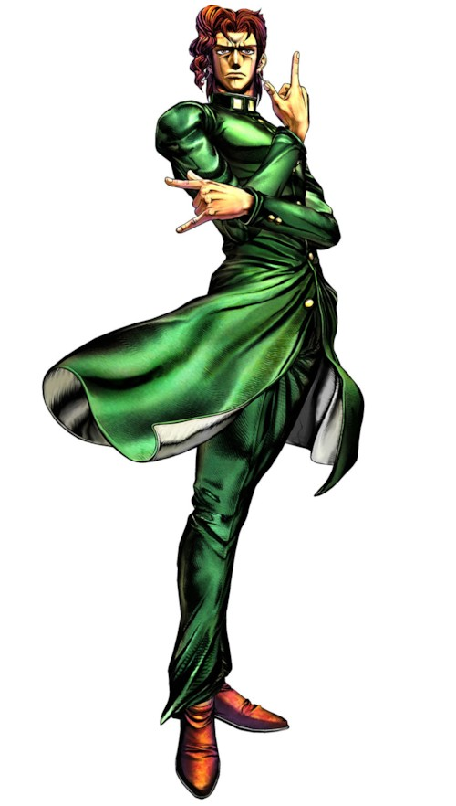

- Level 01 ~
- Level 02 ~
- Level 03 ~
JoJo pose
난이도별 죠죠서기

1. 왼팔을 앞으로 뻗는다.
2. 콧날에 왼손 집게 손가락을
맞춘다.
3. 오른쪽 어깨를 올린다.
4. 오른손을 뻗으며 구호를 외친다.
※ 구호 "인간 찬가는"
----"용기의 찬가!"
close


1. 오른손을 머리에 얹는다.
2. 오른쪽 팔꿈치를
눈 높이까지 올린다.
3. 왼손을 사진과 같이
팔에 얹는다.
4. 턱을 당기고 상대나 카메라
등을 본다.
close


1. 오른팔을 앞에 놓는다.
2.엄지와 집게손가락 사이로
들여다본다.
3. 왼손은 목 살짝 아래에
수평으로 든다.
4. 허리를 회전시켜
왼발을 오른쪽에 비스듬히둔다.
5. 왼발의 발뒷꿈치를 든다.
6. 엉덩이를 조금 뒤로 당긴다.
close


1. 팔을 머리 뒤로 넘기고,
왼팔을 앞으로 교차시킨다.
2. 왼손의 엄지 손가락을 접는다.
3. 오른손의 손가락을 위로 올린다.
4. 허리를 왼쪽을 향하게 한다.
5. 얼굴은 왼쪽 대각선 아래를
향하고 시선은 정면을 향하게 한다.
close


1. 오른쪽 가슴을 연다.
2. 왼손은 옷을 아래로 당긴다.
3. 허리를 오른쪽으로 살짝 당긴다.
4. 야심가득히 웃는다.
close

1. 오른쪽 팔꿈치를
눈높이보다 높게 올린다.
2. 오른쪽 손목을 직각으로 접는다.
꽤 힘을 넣지 않으면
손목이 직각이되지 않기 때문에
주의해야한다.
3. 왼쪽 손목을 배꼽 앞에서
오른손과 평행하게 접는다.
4. 오른쪽 사선 위를 본다.
5. 미소를 지으며 구호를 외친다.
※ 구호 "네놈은 나를!"
"화나게했다!"
close


1. 오른손의 집게 손가락으로
하늘을 가리킨다.
2. 왼손은 주먹을 쥔 상태에서
검지와 새끼 손가락을 세운다.
3. 시선은 위를 향한다
------(가장중요하다)
close


죠죠시리즈의 작가.
연재 초부터 늙지 않는듯한 외모로
흡혈귀나 파문전사, 완전생물이라는
별명도 있다.
※ 죠죠시리즈만 1987년부터
현재까지 연재중이며
1960년생으로 2018년 기준 58세다.
close
다음